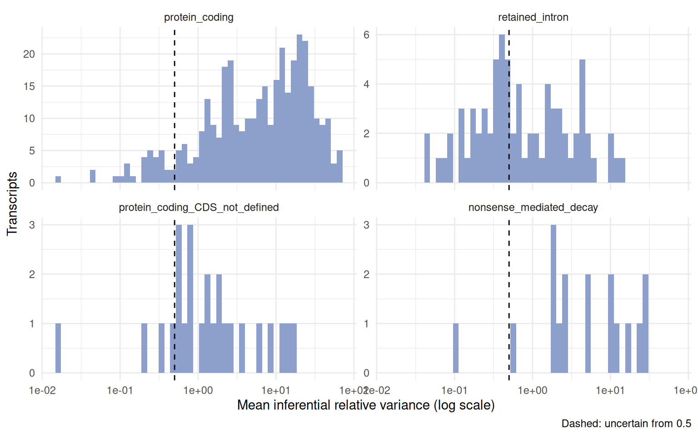
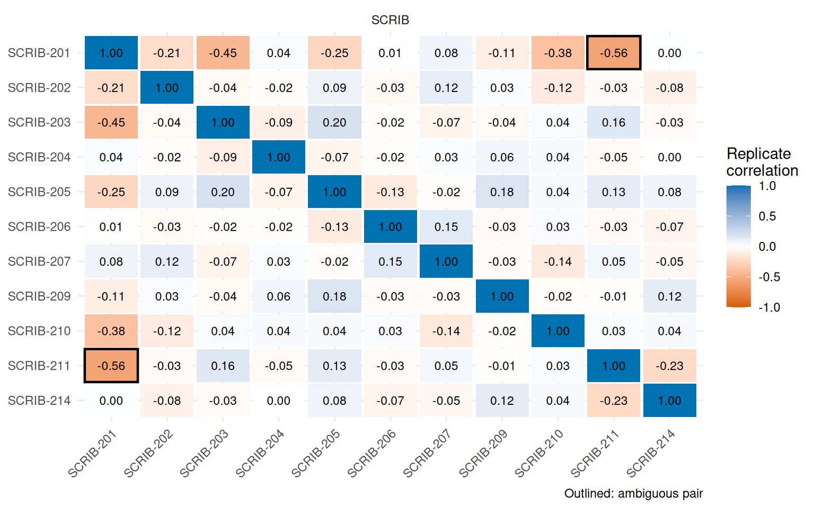
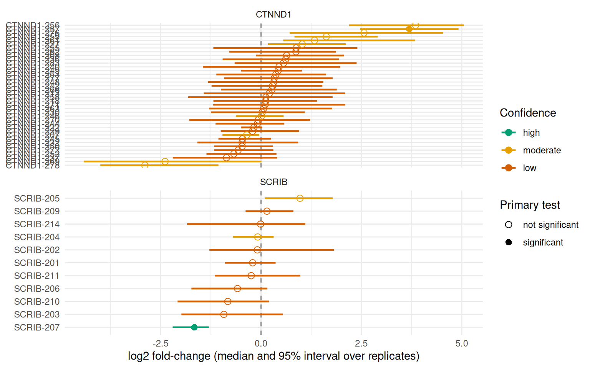
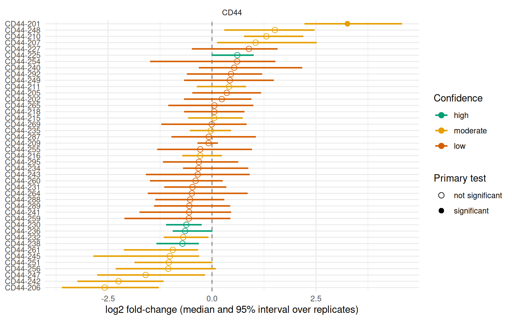

iso <- read_salmon(quant_dirs, annot_path = annot_dir, col_data = col_data, inferential = TRUE)
# or, with a contrast and other cutoffs
iso <- read_salmon(quant_dirs, annot_path = annot_dir, col_data = col_data)
iso <- add_uncertainty(iso, paths = quant_dirs, group = "condition")How confident are we in an isoform-level result?
October 17, 2026
Source:vignettes/articles/isoformic-uncertainty.qmd
Reads that map to several isoforms of a gene can be shared out between them in more than one way, so the abundance of an isoform is estimated with an uncertainty that has nothing to do with biological variability. A fold-change between two isoforms that share most of their reads can be an artefact of how those reads were apportioned in each sample, however clean the statistics look.
Salmon (Patro et al. 2017) measures this inferential uncertainty by drawing replicates from the posterior of the abundances (Gibbs sampling, --numGibbsSamples, 30 by default in salmon_quant()) and by writing the equivalence classes (--dumpEq) and a run summary (meta_info.json). isoformic turns them into four kinds of evidence for every isoform and one confidence class for every differential expression call:
| Evidence | Question it answers | Columns |
|---|---|---|
| Quantification uncertainty | Is the abundance determined by the reads? |
mean_inf_rv, uncertain
|
| Identifiability | Can the isoform be told apart from its siblings? |
min_sibling_cor, ambiguity_group
|
| Read support | How many of its reads map to it alone? | unique_fraction |
| Fold-change stability | Does the contrast survive resampling the quantification? |
lfc_lo, lfc_hi, sign_agreement, frac_draws_sig
|
The first three are properties of the quantification; the last one is a property of one contrast.
Quantifying with replicates
Ask Salmon for the replicates and the equivalence classes. salmon_quant() does it by default; from a shell:
salmon quant ... --numGibbsSamples 30 --dumpEq --dumpEqWeightsThirty replicates are enough for the summaries below. More cost time and disk space and change little. Then read everything in one call, from the same output directories used for read_salmon():
The replicates are read for the transcripts with an estimated mean count of at least one, and the run metadata of every sample is added to col_data(). The replicates stay in memory (metadata(iso)$inf_reps); the tables derived from them are stored in the object and written by write_isoformic().
The example
The package ships two small real datasets in which an isoform switch defines the phenotype. ESRP1 and ESRP2 are epithelial splicing regulators that keep cells in an epithelial isoform program; their loss moves many genes (CD44, CTNND1, ENAH, SCRIB, …) to the isoforms of mesenchymal cells. In prostate cancer the androgen receptor controls ESRP2, which makes this switch part of the androgen response (Munkley et al. 2019).
| Series | Cells | Knockdown | Reference |
|---|---|---|---|
| GSE129540 | prostate cancer |
ESRP2 siRNA, 3 vs 3 |
Munkley et al. (2019) |
| GSE75489 | H358 lung epithelial |
ESRP1 and ESRP2 shRNA, 3 vs 3 |
Yang et al. (2016) |
Both were re-quantified from the public reads (the first 12 million read pairs of each sample) with Salmon 2.8.0 against GENCODE v49, with 30 Gibbs draws and equivalence classes. The swish test (Zhu et al. 2019) was run on the complete quantification, so its q-values are those of the full analysis; only the transcripts of 41 genes (known ESRP targets and the genes with the most significant transcripts) are bundled. data-raw/build_knockdown_example.R rebuilds everything from the Salmon output.
library(isoformic)
library(dplyr)
extdata <- fs::path_package("isoformic", "extdata")
read_knockdown <- function(series) {
dir <- fs::path(extdata, "knockdown", series)
iso <- IsoformicExperiment(
experiment_name = series,
annot_path = fs::path(extdata, "knockdown_annotation"),
assays = list(
abundance = read_parquet(fs::path(dir, "abundance.parquet")),
counts = read_parquet(fs::path(dir, "counts.parquet"))
),
col_data = read_parquet(fs::path(dir, "col_data.parquet"))
)
de_tx(iso) <- read_parquet(fs::path(dir, "det.parquet"))
# The draws and the equivalence classes of the Salmon runs
iso@metadata$inf_reps <- as_inferential_replicates(
read_parquet(fs::path(dir, "draws.parquet"))
)
list(iso = iso, equivalence = read_parquet(fs::path(dir, "equivalence.parquet")))
}
prostate <- read_knockdown("GSE129540")
iso <- prostate$iso
iso
#> <IsoformicExperiment> GSE129540
#> annotation : gencode_v49_knockdown_subset (54 genes, 1,400 transcripts, 16,374 exons)
#> samples : 6 [condition, library_size, run, salmon_version, library_type, detected_library_type, num_processed, num_mapped, percent_mapped, replicate_type, num_replicates, optimiser, em_converged, seq_bias_correct, gc_bias_correct, pos_bias_correct, frag_length_mean, frag_length_sd, qc_flag]
#> transcripts: 481 assayed from 46 genes
#> assays : abundance, counts
#> gene assays: derived from transcript assays on demand
#> DE results : det (481 transcripts)The small result tables of the checks further down (read-split experiments, tool comparisons) are bundled; this helper reads them.
read_split <- function(name) {
read_parquet(fs::path(extdata, "knockdown", "read_split", paste0(name, ".parquet")))
}Run-level checks come first: the mapping rate, the library type and whether the optimiser converged are in the sample table, from salmon_run_qc().
col_data(iso) |>
select(sample_id, condition, num_mapped, percent_mapped, num_replicates, qc_flag)
#> # A tibble: 6 × 6
#> sample_id condition num_mapped percent_mapped num_replicates qc_flag
#> <chr> <chr> <dbl> <dbl> <dbl> <chr>
#> 1 control_1 control 11140615 92.8 30 <NA>
#> 2 control_2 control 11205689 93.4 30 <NA>
#> 3 control_3 control 11205662 93.4 30 <NA>
#> 4 knockdown_1 knockdown 11320687 94.3 30 <NA>
#> 5 knockdown_2 knockdown 11269264 93.9 30 <NA>
#> 6 knockdown_3 knockdown 11336987 94.5 30 <NA>The library_size column holds the total estimated count of the complete quantification. Because the object keeps only a subset of the transcripts, add_uncertainty() uses it to scale the counts before it computes the fold-changes.
The bundled swish result flags the isoforms that change:
Computing the uncertainty
add_uncertainty() computes the tables and, given a group, repeats the contrast on every draw. Without paths it uses the draws already in the object.
iso <- add_uncertainty(
iso,
group = "condition",
levels = c("control", "knockdown"),
equivalence = prostate$equivalence
)
iso
#> <IsoformicExperiment> GSE129540
#> annotation : gencode_v49_knockdown_subset (54 genes, 1,400 transcripts, 16,374 exons)
#> samples : 6 [condition, library_size, run, salmon_version, library_type, detected_library_type, num_processed, num_mapped, percent_mapped, replicate_type, num_replicates, optimiser, em_converged, seq_bias_correct, gc_bias_correct, pos_bias_correct, frag_length_mean, frag_length_sd, qc_flag]
#> transcripts: 481 assayed from 46 genes
#> assays : abundance, counts
#> gene assays: derived from transcript assays on demand
#> DE results : det (481 transcripts)Which isoforms are not determined by the reads?
tx_uncertainty() has one row per assessed transcript. mean_inf_rv is the inferential relative variance (Zhu et al. 2019): the variance of the draws in excess of the counting noise (the mean), relative to the expression, averaged over samples. A well-determined isoform has a value near zero; the value of one that shares its reads with others can be several units.
unc <- tx_uncertainty(iso)
unc |>
arrange(desc(mean_inf_rv)) |>
select(any_of(c("gene_name", "transcript_name", "mean_count", "mean_inf_rv", "uncertain", "unique_fraction"))) |>
head(8)
#> # A tibble: 8 × 6
#> gene_name transcript_name mean_count mean_inf_rv uncertain unique_fraction
#> <chr> <chr> <dbl> <dbl> <lgl> <dbl>
#> 1 FLNA FLNA-227 84.4 65.6 TRUE 0.0000416
#> 2 MYO6 MYO6-222 888. 65.6 TRUE 0
#> 3 MYO6 MYO6-201 1646. 63.2 TRUE 0
#> 4 APLP2 APLP2-227 219. 61.7 TRUE 0
#> 5 CLSTN1 CLSTN1-201 276. 60.7 TRUE 0
#> 6 CTNND1 CTNND1-283 203. 60.2 TRUE 0.000234
#> 7 FLNA FLNA-202 261. 59.2 TRUE 0
#> 8 EXOC7 EXOC7-227 150. 51.7 TRUE 0
table(unc$transcript_type, unc$uncertain)
#>
#> FALSE TRUE
#> nonsense_mediated_decay 1 16
#> protein_coding 31 333
#> protein_coding_CDS_not_defined 4 21
#> retained_intron 34 41The distribution per transcript type, with the cutoff that separates uncertain isoforms (0.5 by default; with 30 draws, sampling noise puts well-determined, highly expressed transcripts near 0.1):
plot_inf_rv(iso)
unique_fraction is the share of the fragments of an isoform that are compatible with it alone, read from the equivalence classes of --dumpEq. It is the most direct measure of read support. With paths, add_uncertainty() reads the classes itself; here the table returned by equivalence_support() is passed instead.
Which isoforms cannot be told apart?
When two isoforms share their reads, every fragment given to one is taken from the other, and their draws are negatively correlated. isoform_ambiguity() reports the mean correlation of every pair of isoforms of the same gene; pairs at or below cor_cutoff (-0.5) are ambiguous and connected into ambiguity_groups.
isoform_ambiguity(iso, ambiguous_only = TRUE) |>
select(gene_name, transcript_name_1, transcript_name_2, mean_cor, min_cor, n_samples)
#> # A tibble: 14 × 6
#> gene_name transcript_name_1 transcript_name_2 mean_cor min_cor n_samples
#> <chr> <chr> <chr> <dbl> <dbl> <int>
#> 1 DHRS7 DHRS7-212 DHRS7-202 -0.836 -0.923 6
#> 2 SLC45A3 SLC45A3-201 SLC45A3-214 -0.821 -0.906 6
#> 3 TLN1 TLN1-209 TLN1-210 -0.681 -0.862 6
#> 4 RPL17 RPL17-222 RPL17-220 -0.639 -0.769 6
#> 5 MYO6 MYO6-219 MYO6-215 -0.621 -0.842 6
#> 6 ADAMTS1 ADAMTS1-201 ADAMTS1-211 -0.612 -0.881 6
#> 7 RPS24 RPS24-214 RPS24-202 -0.606 -0.722 6
#> 8 DHRS7 DHRS7-208 DHRS7-206 -0.603 -0.754 6
#> 9 KIF13A KIF13A-203 KIF13A-206 -0.602 -0.796 6
#> 10 ZC3HAV1 ZC3HAV1-201 ZC3HAV1-206 -0.600 -0.840 6
#> 11 SCRIB SCRIB-201 SCRIB-211 -0.561 -0.733 6
#> 12 DHRS7 DHRS7-202 DHRS7-208 -0.547 -0.690 6
#> 13 UBE3B UBE3B-202 UBE3B-216 -0.521 -0.757 6
#> 14 APLP2 APLP2-203 APLP2-202 -0.506 -0.716 6
plot_isoform_correlation(iso, gene_name = "SCRIB")
An ambiguous pair is a statement about this quantification: one isoform of the pair may be up and the other down, or both unchanged, with the same data. The sum of the pair is better determined than either part.
How stable is each fold-change?
de_confidence() repeats the contrast on every draw and summarises the log2 fold-change: its median and 95% interval, the share of draws that agree on its direction (sign_agreement) and the share in which the isoform is called differentially expressed (frac_draws_sig). Combined with the quantification uncertainty and the ambiguity it gives a confidence class:
-
high: the fold-change is stable (sign_agreement >= 0.95), the isoform is notuncertainand has no ambiguous sibling; -
moderate: exactly one of these fails; -
low: two or more fail.
The class says how far a call on this isoform can be trusted, so read it for the isoforms flagged by the primary test; for the others it only says that nothing would be believed.
conf <- de_confidence(iso)
conf |>
filter(n_det_sig > 0) |>
select(gene_name, transcript_name, det_log2FC, lfc_lo, lfc_hi, sign_agreement, mean_inf_rv, confidence, reason) |>
head(10)
#> # A tibble: 10 × 9
#> gene_name transcript_name det_log2FC lfc_lo lfc_hi sign_agreement mean_inf_rv
#> <chr> <chr> <dbl> <dbl> <dbl> <dbl> <dbl>
#> 1 OASL OASL-206 7.11 7.02 7.79 1 2.35
#> 2 OASL OASL-211 6.83 6.39 7.35 1 2.36
#> 3 OASL OASL-201 5.62 5.29 6.08 1 1.32
#> 4 ZC3HAV1 ZC3HAV1-204 5.43 5.04 6.53 1 4.71
#> 5 OASL OASL-202 4.62 4.21 5.23 1 4.41
#> 6 FLNB FLNB-202 4.30 3.28 6.23 1 45.7
#> 7 UBE3B UBE3B-214 3.86 3.02 5.03 1 15.1
#> 8 CTNND1 CTNND1-257 3.36 2.47 4.92 1 25.3
#> 9 MYO6 MYO6-203 -3.27 -5.05 -2.57 1 22.3
#> 10 ADAMTS1 ADAMTS1-201 3.05 2.22 5.51 1 48.3
#> # ℹ 2 more variables: confidence <ord>, reason <chr>
table(significant = conf$n_det_sig > 0, confidence = conf$confidence, useNA = "ifany")
#> confidence
#> significant high moderate low
#> FALSE 13 155 285
#> TRUE 3 20 5
plot_de_confidence(iso, gene_name = c("SCRIB", "CTNND1"))
A significant isoform with a low class is not wrong: it is a call that the quantification does not support strongly. Typical reasons are shown in reason; a fold-change interval that crosses zero is the clearest sign.
Two things stand out in these data. First, the isoforms with the largest fold-changes are not the ESRP targets: OASL and ZC3HAV1 are interferon-stimulated genes, which is a common response to transfected siRNA (an interpretation, not something these data test), and they are also the best-determined calls (a narrow interval and a moderate class from an inferential variance of a few units). Second, the ESRP targets themselves are mostly in genes with dozens of annotated isoforms, where the reads cannot decide between near-identical transcripts. Compare the two genes of the plot above:
conf |>
left_join(unc[, c("transcript_id", "unique_fraction")], by = c("feature_id" = "transcript_id")) |>
filter(gene_name %in% c("SCRIB", "CTNND1", "ENAH"), abs(lfc_median) > 1.5) |>
arrange(gene_name, desc(abs(lfc_median))) |>
slice_head(n = 3, by = gene_name) |>
select(gene_name, transcript_name, lfc_median, lfc_lo, lfc_hi, sign_agreement, mean_inf_rv, unique_fraction, confidence)
#> # A tibble: 7 × 9
#> gene_name transcript_name lfc_median lfc_lo lfc_hi sign_agreement mean_inf_rv
#> <chr> <chr> <dbl> <dbl> <dbl> <dbl> <dbl>
#> 1 CTNND1 CTNND1-256 3.85 2.19 5.05 1 34.7
#> 2 CTNND1 CTNND1-257 3.69 2.47 4.92 1 25.3
#> 3 CTNND1 CTNND1-278 -2.89 -4.00 -1.06 1 20.3
#> 4 ENAH ENAH-217 -2.03 -3.26 -0.291 1 23.3
#> 5 ENAH ENAH-212 1.99 0.291 3.06 1 18.6
#> 6 ENAH ENAH-215 1.94 0.498 3.53 1 39.5
#> 7 SCRIB SCRIB-207 -1.66 -2.20 -1.30 1 0.340
#> # ℹ 2 more variables: unique_fraction <dbl>, confidence <ord>SCRIB-207 is the clean case: an interval far from zero, an inferential variance of 0.3 and no ambiguous partner, so a high confidence call that the primary test also flags. The CTNND1 and ENAH isoforms change by several log2 units with every draw agreeing on the direction, but their inferential variance is 18 to 50 against a cutoff of 0.5 and practically no fragment is unique to them (unique_fraction is zero or nearly): the data say that something in these genes changes, not which of the transcripts it is. SCRIB has an ambiguous pair as well (SCRIB-201 and SCRIB-211, above), which collapse_groups handles by testing their sum as one feature.
A second dataset: the CD44 switch
The H358 series is the classical case. Without ESRP1 and ESRP2, CD44 moves from long variant transcripts (13 to 18 exons) to the short transcript CD44-201 (9 exons). The reads tell the same story, with the confidence the quantification allows:
lung <- read_knockdown("GSE75489")
iso_lung <- add_uncertainty(
lung$iso,
group = "condition",
levels = c("control", "knockdown"),
equivalence = lung$equivalence
)
de_confidence(iso_lung, gene_name = "CD44") |>
left_join(
tx_uncertainty(iso_lung)[, c("transcript_id", "unique_fraction")],
by = c("feature_id" = "transcript_id")
) |>
filter(abs(lfc_median) > 1.5) |>
arrange(desc(lfc_median)) |>
select(transcript_name, lfc_median, lfc_lo, lfc_hi, sign_agreement, mean_inf_rv, unique_fraction, confidence)
#> # A tibble: 5 × 8
#> transcript_name lfc_median lfc_lo lfc_hi sign_agreement mean_inf_rv
#> <chr> <dbl> <dbl> <dbl> <dbl> <dbl>
#> 1 CD44-201 3.26 2.22 4.57 1 9.90
#> 2 CD44-248 1.51 0.293 2.47 1 4.87
#> 3 CD44-247 -1.60 -2.76 -0.167 0.967 6.80
#> 4 CD44-242 -2.25 -3.24 -1.16 1 12.1
#> 5 CD44-206 -2.58 -3.61 -1.28 1 8.19
#> # ℹ 2 more variables: unique_fraction <dbl>, confidence <ord>
plot_de_confidence(iso_lung, gene_name = "CD44")
The direction of the switch is certain: the short CD44-201 goes up, as does CD44-248, and the long variant transcripts CD44-242, CD44-206 and CD44-247 go down, with at least 97% of the draws agreeing on every direction. Which transcript carries each change is not, because the transcripts differ by single exons and none has reads of its own (unique_fraction is zero), so none gets better than a moderate class. Reporting the class next to the fold-change is the honest summary: CD44 switches towards its short form (high agreement), but the individual variant isoforms cannot be resolved with short reads.
Testing ambiguous isoforms as one feature
When a pair cannot be told apart, test the part that can be measured, the sum. collapse_groups = TRUE sums the draws of each ambiguity group before the contrast:
de_confidence(iso, group = "condition", levels = c("control", "knockdown"), collapse_groups = TRUE) |>
filter(feature_type == "group") |>
select(feature_id, transcript_ids, lfc_median, lfc_lo, lfc_hi, sign_agreement, mean_inf_rv, confidence)
#> # A tibble: 12 × 8
#> feature_id transcript_ids lfc_median lfc_lo lfc_hi sign_agreement
#> <chr> <chr> <dbl> <dbl> <dbl> <dbl>
#> 1 ENSG00000154734.17_a… ENST000002849… 1.54 1.40 1.66 1
#> 2 ENSG00000158715.7_am… ENST000003671… 1.10 1.05 1.20 1
#> 3 ENSG00000196586.18_a… ENST000009278… 0.840 0.672 1.12 1
#> 4 ENSG00000151148.15_a… ENST000003424… 0.816 0.478 1.10 1
#> 5 ENSG00000100612.15_a… ENST000009318… 0.708 0.665 0.740 1
#> 6 ENSG00000105939.15_a… ENST000002423… 0.705 0.655 0.758 1
#> 7 ENSG00000265681.9_am… ENST000006173… 0.440 0.316 0.529 1
#> 8 ENSG00000084234.19_a… ENST000003381… -0.354 -0.565 -0.245 1
#> 9 ENSG00000180900.21_a… ENST000003204… -0.290 -0.509 0.156 0.9
#> 10 ENSG00000138326.22_a… ENST000006138… 0.255 0.239 0.272 1
#> 11 ENSG00000137076.23_a… ENST000007069… -0.0489 -0.201 0.0758 0.767
#> 12 ENSG00000137177.20_a… ENST000003788… 0.0121 -0.187 0.301 0.533
#> # ℹ 2 more variables: mean_inf_rv <dbl>, confidence <ord>Groups from Terminus
Terminus (Terminus Enables the Discovery of Data-Driven, Robust Transcript Groups from RNA-seq Data 2020) groups the transcripts whose abundances the reads cannot estimate separately, from the equivalence classes and the replicates of all samples, and gives one consensus grouping. run_terminus() runs it from R on the Salmon output directories, installing Terminus with condathis the first time, and returns the consensus groups; add_uncertainty(groups = ) uses them in place of the groups built from the correlation of the replicates, and the confidence classes and collapse_groups follow them. Terminus needs replicates and equivalence classes with their weights (--dumpEq --dumpEqWeights), which salmon_quant() writes; run_terminus() checks them before it starts.
groups <- run_terminus(quant_dirs, output_dir = "terminus", workers = 4)
iso <- add_uncertainty(iso, paths = quant_dirs, group = "condition", groups = groups)
# Groups from an earlier run, or from Terminus run outside R
groups <- read_terminus_groups("terminus/sample1")On the six prostate samples (data-raw/knockdown/compare_terminus.R, Terminus 0.1.0), the consensus holds 14,029 groups of 52,911 transcripts. The two groupings point at the same isoforms but differ in reach:
read_split("terminus_comparison")
#> # A tibble: 15 × 2
#> quantity value
#> <chr> <dbl>
#> 1 assessed transcripts 116229
#> 2 transcripts in a correlation group 8076
#> 3 transcripts in a Terminus group 20703
#> 4 correlation-grouped transcripts also grouped by Terminus 5420
#> 5 Terminus-grouped transcripts also in a correlation group 5420
#> 6 correlation pairs also in the same Terminus group 2831
#> 7 median InfRV, correlation-grouped 8.59
#> 8 median InfRV, Terminus-grouped 15.5
#> 9 median InfRV, in neither 1.44
#> 10 large changes (|log2FC| > 1): high, correlation groups 203
#> 11 large changes (|log2FC| > 1): moderate, correlation groups 2450
#> 12 large changes (|log2FC| > 1): low, correlation groups 1893
#> 13 large changes (|log2FC| > 1): high, Terminus groups 203
#> 14 large changes (|log2FC| > 1): moderate, Terminus groups 1525
#> 15 large changes (|log2FC| > 1): low, Terminus groups 2818Two thirds of the transcripts that the correlation rule groups are also in a Terminus group, and the same share of its pairs fall in the same group. Terminus groups more transcripts (20,703 against 8,076 of the assessed ones), and the isoforms it groups are the most uncertain (median inferential relative variance 15.5, against 8.6 for the correlation groups and 1.4 for the isoforms in neither). Among the large changes the high class stays at 203 isoforms, and about 900 isoforms move from moderate to low because a Terminus group counts as an ambiguous sibling. Both groupings are heuristics built from the same replicates; neither is the truth, and the Terminus groups come from the 12 million read pairs of these samples.
Trees from TreeTerminus
A flat group either collapses isoforms or does not. TreeTerminus (Singh et al. 2023) builds trees instead: the leaves are isoforms and every node is the sum of the isoforms below it, so the resolution can change from one isoform to the next. read_treeterminus() reads the trees and cut_transcript_trees() cuts them with the replicates in the object: an isoform the reads determine stays itself, one they do not is replaced by its lowest ancestor whose inferential relative variance is below the cutoff, and nested choices are merged so that no isoform is in two groups.
# treeterminus group -d <folder with the Salmon runs> -o tt --mean_inf true
trees <- read_treeterminus("tt", salmon_dir = quant_dirs[[1]])
groups <- cut_transcript_trees(trees, iso, cutoff = 0.5)
iso <- add_uncertainty(iso, group = "condition", groups = groups)On the six prostate samples (data-raw/knockdown/compare_treeterminus.R; TreeTerminus Mean trees of the six samples), the three groupings compare as follows:
read_split("grouping_comparison")
#> # A tibble: 3 × 11
#> grouping assessed grouped groups uncertain_left_alone features_after_colla…¹
#> <chr> <int> <int> <int> <int> <int>
#> 1 correlati… 116229 8076 3945 78892 112258
#> 2 Terminus 116229 20703 8011 67138 103692
#> 3 TreeTermi… 116229 31606 5543 58225 90326
#> # ℹ abbreviated name: ¹features_after_collapse
#> # ℹ 5 more variables: median_group_inf_rv <dbl>, groups_below_cutoff <dbl>,
#> # large_high <int>, large_moderate <int>, large_low <int>The trees reach many more of the uncertain isoforms (58,225 are left alone, against 67,138 with Terminus and 78,892 with the correlation rule), and the features they produce are the ones the reads determine: the median inferential relative variance of a group is 0.19, against 2.87 for the Terminus groups, most of which stay uncertain after summing. Grouping more isoforms also flags more of them as ambiguous, so fewer large changes stay in the high class (159 against 203). The isoforms still left alone are those whose whole tree stays above the cutoff; unresolved = "root" merges such trees into one group each. TreeTerminus needed 24 minutes and 18 GB of memory for the six samples; reading and cutting the trees took about four minutes.
Does the confidence predict what does not reproduce?
A confidence class is only useful if it separates the calls that hold up from those that do not. The prostate dataset allows a direct check, because a library can be quantified twice. Each of the six libraries was split into its first and second 6 million read pairs and quantified separately (data-raw/knockdown/split_halves.sh, data-raw/knockdown/validate_uncertainty.R), which gives technical replicates and two kinds of contrast:
- null contrasts, half 1 against half 2 of the same libraries, for the controls and for the knockdowns, where every difference is noise;
- the real contrast (control against knockdown), called in half 1 and checked in half 2.
Stability alone is not enough. The null contrasts contain hundreds of transcripts whose fold-change exceeds two-fold and is stable over the draws (at least 95% of them agree on the direction), because the draws describe the quantification and the two halves differ in the reads that were sampled. Nearly all of them are demoted by the confidence class:
read_split("null_stable")
#> # A tibble: 2 × 5
#> contrast stable_large_changes high moderate low
#> <chr> <int> <int> <int> <int>
#> 1 null_control 575 3 444 128
#> 2 null_knockdown 539 1 441 97Uncertain isoforms reproduce less. Among the isoforms called by edgeR in half 1, the share that goes the same way in half 2 and that is called again falls from the high to the low class:
read_split("replication_class")
#> # A tibble: 3 × 4
#> class calls same_direction significant_again
#> <chr> <int> <dbl> <dbl>
#> 1 high 52 1 0.769
#> 2 moderate 119 0.983 0.65
#> 3 low 62 0.758 0.291The inferential relative variance shows the same gradient on every large, stable change, and puts a scale on the cutoff: the direction agrees in 98% of the isoforms below 0.5, which is the default cutoff for uncertain, and in 78% of those above 10.
read_split("replication_rv")
#> # A tibble: 4 × 3
#> inferential_rv transcripts same_direction
#> <chr> <int> <dbl>
#> 1 below 0.5 104 0.981
#> 2 0.5 to 2 204 0.951
#> 3 2 to 10 687 0.86
#> 4 above 10 728 0.782Dividing out the uncertainty
The classes describe a call after the test. The same replicates can also go into the test: inferential_overdispersion() estimates how much more variable than Poisson the count of each isoform is because of the read ambiguity, as edgeR::catchSalmon() does (Baldoni et al. 2024), and scale_counts() divides the counts by it. The scaled counts can then be given to any count-based test. In the null contrasts above, edgeR on the raw counts calls about twice as many transcripts at a p-value below 0.001 as chance allows, and on the scaled counts it calls fewer than chance allows:
read_split("null_calls")
#> # A tibble: 6 × 6
#> contrast method tested q_below_0.05 p_below_0.001 expected_p_below_0.001
#> <chr> <chr> <int> <int> <int> <dbl>
#> 1 null_control swish 32206 1 NA 32.2
#> 2 null_control edgeR 32168 0 68 32.2
#> 3 null_control edgeR… 13795 0 4 13.8
#> 4 null_knockdown swish 31677 0 NA 31.7
#> 5 null_knockdown edgeR 31651 0 73 31.7
#> 6 null_knockdown edgeR… 13733 0 12 13.7The scaled test is conservative here, with fewer transcripts passing the expression filter (13,800 against 32,000), and these null contrasts compare technical replicates of the same libraries, a favourable case; no biological variability is involved. The classes and the scaling answer different questions and can be used together.
overdispersion <- inferential_overdispersion(iso)
summary(overdispersion$overdispersion)
#> Min. 1st Qu. Median Mean 3rd Qu. Max.
#> 1.000 2.876 6.815 12.459 18.020 69.872
iso <- scale_counts(iso)
scaled <- edgeR::DGEList(assay(iso, "counts_scaled"), group = col_data(iso)$condition)
design <- stats::model.matrix(~group, scaled$samples)
scaled <- edgeR::estimateDisp(scaled, design)
fit <- edgeR::glmQLFit(scaled, design)
scaled_test <- edgeR::topTags(edgeR::glmQLFTest(fit, coef = 2), n = 5)$table
scaled_test |>
tibble::rownames_to_column("transcript_id") |>
left_join(unc[, c("transcript_id", "gene_name", "transcript_name", "mean_inf_rv")], by = "transcript_id") |>
select(gene_name, transcript_name, logFC, FDR, mean_inf_rv)
#> gene_name transcript_name logFC FDR mean_inf_rv
#> 1 OASL OASL-211 7.314540 1.634817e-10 2.355846
#> 2 OASL OASL-206 8.320536 2.016337e-10 2.350012
#> 3 ESRP2 ESRP2-202 -2.051695 1.310068e-09 3.126908
#> 4 OASL OASL-201 6.929644 1.764658e-09 1.317612
#> 5 ZC3HAV1 ZC3HAV1-204 9.691498 2.307520e-07 4.709698Testing transcript usage
The tests above ask whether an isoform changes. Switches are also tested as a change in the share of a gene that an isoform carries. test_usage() runs edgeR diffSplice, satuRn or DEXSeq on the counts, divided by the overdispersion of the replicates when the object has them, and returns the same table for the three backends. With more than two groups it tests every level against the first, or every pair with contrasts = "pairwise", and the contrast column says which comparison each row belongs to; contrasts = "omnibus" gives one p-value per isoform for a difference among any of the groups:
usage <- test_usage(iso, group = "condition", levels = c("control", "knockdown"), method = "diffsplice")
usage |>
filter(gene_qvalue < 0.05) |>
select(gene_name, transcript_name, usage_log2FC, qvalue, gene_qvalue, scaled) |>
head(8)
#> # A tibble: 8 × 6
#> gene_name transcript_name usage_log2FC qvalue gene_qvalue scaled
#> <chr> <chr> <dbl> <dbl> <dbl> <lgl>
#> 1 FLNB FLNB-202 5.54 0.0000000424 0.0000000501 TRUE
#> 2 CTNND1 CTNND1-257 1.90 0.000000322 0.000000381 TRUE
#> 3 RPS24 RPS24-202 0.764 0.0000312 0.0000246 TRUE
#> 4 TLN1 TLN1-209 -0.690 0.00234 0.00184 TRUE
#> 5 ESRP2 ESRP2-203 0.812 0.00290 0.00228 TRUE
#> 6 SCRIB SCRIB-207 -1.29 0.00902 0.00742 TRUE
#> 7 FLNB FLNB-201 -0.389 0.00902 0.0000000501 TRUE
#> 8 UBE3B UBE3B-202 -0.562 0.0116 0.0157 TRUEThe division matters. In the null contrasts of the read-split experiment, where every call is a false positive, the unscaled diffSplice and DEXSeq call dozens to hundreds of transcripts. The calls of the real contrast made in one half of the reads go the same way in the other half in 47% of the cases for unscaled diffSplice, which is chance, and in 65% for DEXSeq. With the scaling the false positives nearly vanish, and the calls reproduce (100% and 94%):
read_split("usage_null") |>
select(contrast, method, scaled, transcripts, q_below_0.05, p_below_0.001, expected_p_below_0.001)
#> # A tibble: 12 × 7
#> contrast method scaled transcripts q_below_0.05 p_below_0.001
#> <chr> <chr> <lgl> <int> <int> <int>
#> 1 null_control diffsplice FALSE 16194 41 75
#> 2 null_control diffsplice TRUE 5319 7 10
#> 3 null_control satuRn FALSE 16194 0 3
#> 4 null_control satuRn TRUE 5319 0 9
#> 5 null_control DEXSeq FALSE 16194 195 203
#> 6 null_control DEXSeq TRUE 5319 12 20
#> 7 null_knockdown diffsplice FALSE 15950 59 90
#> 8 null_knockdown diffsplice TRUE 5318 2 8
#> 9 null_knockdown satuRn FALSE 15950 0 2
#> 10 null_knockdown satuRn TRUE 5318 2 6
#> 11 null_knockdown DEXSeq FALSE 15950 244 250
#> 12 null_knockdown DEXSeq TRUE 5318 4 8
#> # ℹ 1 more variable: expected_p_below_0.001 <dbl>
read_split("usage_replication")
#> # A tibble: 6 × 6
#> method scaled calls_half1 tested_in_half2 same_direction significant_again
#> <chr> <lgl> <int> <int> <dbl> <dbl>
#> 1 diffsplice FALSE 77 36 0.472 0.083
#> 2 diffsplice TRUE 20 17 1 0.353
#> 3 satuRn FALSE 0 0 NaN NaN
#> 4 satuRn TRUE 21 20 1 0.3
#> 5 DEXSeq FALSE 365 224 0.647 0.165
#> 6 DEXSeq TRUE 130 107 0.944 0.43satuRn is the most conservative of the three without the scaling, and still gains calls that reproduce with it. The scaled runs test fewer transcripts, because fewer pass the expression filter once the counts are divided; the false positives are fewer partly for that reason. These are technical replicates of the same libraries, which is the most favourable comparison for a usage test: biological variability is absent, so they say how well a method resists read ambiguity and nothing else.
Against IsoformSwitchAnalyzeR
IsoformSwitchAnalyzeR (version 2.10.0) tests isoform usage with DEXSeq too, adds its own expression and effect-size filters, and calls an isoform a switch when its adjusted p-value is below 0.05 and its usage changes by at least 0.1. Run on the same six prostate samples (data-raw/knockdown/compare_isar.R), with the same two thresholds applied to test_usage(), it gives:
read_split("isar_comparison") |>
select(tool, tested, calls, shared_with_isar, uncertain, ambiguous, unstable, high_confidence)
#> # A tibble: 3 × 8
#> tool tested calls shared_with_isar uncertain ambiguous unstable
#> <chr> <int> <int> <int> <int> <int> <int>
#> 1 IsoformSwitchAnaly… 79463 40 40 39 7 17
#> 2 isoformic DEXSeq, … 19171 372 8 357 85 181
#> 3 isoformic DEXSeq, … 8779 139 1 123 43 25
#> # ℹ 1 more variable: high_confidence <int>There is no ground truth for this contrast, so the table says how the tools differ and not which is right. The three call sets overlap very little: eight of the 372 calls on raw counts are also IsoformSwitchAnalyzeR switches, and one of the 139 calls on scaled counts. The tools tested different isoforms (79,463 for IsoformSwitchAnalyzeR against 19,171 and 8,779 here, which apply their expression filters at different points), so part of the disagreement is the filters.
What the uncertainty tables add is a way to read each call. Most calls of every tool (88% to 98%) are on isoforms with an inferential relative variance of at least 0.5, as usage switches mostly occur in genes with many near-identical isoforms. The calls differ in their stability over the replicates: 17 of the 40 switches of IsoformSwitchAnalyzeR and 181 of the 372 calls on raw counts have a fold-change that fewer than 95% of the replicates agree on, against 25 of the 139 calls on scaled counts, which are also the calls that reproduce between read halves above.
Using the confidence downstream
Isoform switches count significant isoforms, which is where ambiguous quantification does most damage. With the confidence stored, isoform_switches() reports how many significant isoforms of each gene are confident and confident_only = TRUE keeps only those:
isoform_switches(iso) |>
select(gene_name, n_det_sig, n_det_confident, switch_type) |>
head(8)
#> # A tibble: 8 × 4
#> gene_name n_det_sig n_det_confident switch_type
#> <chr> <int> <int> <chr>
#> 1 MYO6 3 0 opposite_direction
#> 2 OASL 5 0 det_not_deg
#> 3 UBE3B 3 1 det_not_deg
#> 4 ADAMTS1 3 0 det_not_deg
#> 5 ZC3HAV1 2 0 det_not_deg
#> 6 RAC1 2 1 det_not_deg
#> 7 SLC45A3 2 0 det_not_deg
#> 8 FLNB 1 0 det_not_deg
isoform_switches(iso, confident_only = TRUE) |>
select(gene_name, n_det_sig, n_det_confident, switch_type) |>
head(8)
#> # A tibble: 3 × 4
#> gene_name n_det_sig n_det_confident switch_type
#> <chr> <int> <int> <chr>
#> 1 UBE3B 1 1 det_not_deg
#> 2 RAC1 1 1 det_not_deg
#> 3 SCRIB 1 1 det_not_degdominant_isoform() adds the uncertainty of the dominant isoform (dominant_inf_rv, dominant_ambiguous), and productive_fraction() uses the same draws to put an uncertainty on the share of expression carried by productive isoforms (see the productivity article).
dominant_isoform(iso, group = "condition") |>
filter(dominant_switch) |>
select(gene_name, condition, dominant_transcript_name, dominant_fraction, dominant_inf_rv, dominant_ambiguous) |>
head(6)
#> # A tibble: 6 × 6
#> gene_name condition dominant_transcript_name dominant_fraction dominant_inf_rv
#> <chr> <chr> <chr> <dbl> <dbl>
#> 1 SLK control SLK-207 0.256 14.1
#> 2 SLK knockdown SLK-213 0.317 26.3
#> 3 FGFR2 control FGFR2-215 0.433 0.290
#> 4 FGFR2 knockdown FGFR2-222 0.259 0.101
#> 5 ITGA6 control ITGA6-212 0.437 49.2
#> 6 ITGA6 knockdown ITGA6-202 0.704 16.5
#> # ℹ 1 more variable: dominant_ambiguous <lgl>Reporting the uncertainty
Report the numbers next to the classes, and the settings that produced them. uncertainty_report() collects the tables a methods or results section needs:
report <- uncertainty_report(iso)
names(report)
#> [1] "settings" "run" "transcripts" "genes" "de"
#> [6] "switches"
report$transcripts
#> # A tibble: 4 × 7
#> transcript_type n_assessed n_uncertain pct_uncertain median_inf_rv n_ambiguous
#> <chr> <int> <int> <dbl> <dbl> <int>
#> 1 protein_coding 364 333 91.5 7.47 25
#> 2 retained_intron 75 41 54.7 0.589 1
#> 3 protein_coding… 25 21 84 1.32 0
#> 4 nonsense_media… 17 16 94.1 4.76 0
#> # ℹ 1 more variable: median_unique_fraction <dbl>
report$de
#> # A tibble: 3 × 5
#> confidence n_significant n_unstable n_uncertain n_ambiguous
#> <ord> <int> <int> <int> <int>
#> 1 high 3 0 0 0
#> 2 moderate 20 0 20 0
#> 3 low 5 0 5 5
report$switches
#> NULL-
Results. State how many of the significant isoforms have each confidence class and why the others do not (
report$de: unstable fold-change, uncertain quantification, ambiguous sibling), and how many switches or genes remain once only confident isoforms are kept (report$switches). -
Tables. For every isoform you discuss, give the fold-change with its interval (
lfc_median,lfc_lo,lfc_hi),sign_agreement,mean_inf_rv,unique_fractionand the ambiguous partner, if any, next to the p-value of the primary test. -
Figures.
plot_de_confidence()for the isoforms of a gene,plot_isoform_correlation()for the ambiguous ones. -
Methods.
uncertainty_methods()writes a paragraph with the Salmon version, the number of draws and the cutoffs; edit it to fit.
uncertainty_methods(iso)
#> [1] "Transcript abundances were quantified with Salmon 2.8.0 and 30 Gibbs samples per sample were used to measure the inferential uncertainty of each isoform. For every transcript, the inferential relative variance (InfRV; Zhu et al. 2019) was averaged over samples, and transcripts with an InfRV of at least 0.5 were called uncertain. The correlation between the replicates of isoforms of the same gene was averaged over samples, and isoform pairs with a correlation of -0.5 or lower were called ambiguous and grouped. The log2 fold-change of each isoform was recomputed on every replicate (counts scaled to a common library size, pseudocount 5), and a fold-change was called stable when at least 95% of the replicates agreed on its direction. Differentially expressed isoforms were assigned high confidence when the fold-change was stable, the quantification was not uncertain and no sibling isoform was ambiguous, moderate confidence when one of these conditions failed and low confidence when two or more failed. Only transcripts with a mean estimated count of at least 1 were assessed. The contrast was knockdown versus control in the condition variable."Some cautions belong in the text as well. The draws describe the uncertainty of the quantification only; they do not replace biological replicates, and an isoform with a stable fold-change can still be a false positive of the primary test. The cutoffs (inf_rv_cutoff, cor_cutoff, min_agreement) are heuristics: rerun add_uncertainty() with other values and report how the numbers change. The classes are calibrated against nothing but the data at hand. Finally, the contrast repeated on each draw is a screening statistic (a Welch test on the log scale, with a pseudocount of 5) and does not replace swish or DESeq2.
Saving
The tables, the settings and the run metadata are saved with the object; the draws are not, and are re-read from the Salmon directories with add_uncertainty(iso, paths = ) when the tables need to be recomputed.
out_dir <- fs::path(tempdir(), "knockdown_uncertainty")
invisible(write_isoformic(iso, out_dir, overwrite = TRUE))
fs::dir_ls(fs::path(out_dir, "dea"))
#> /tmp/RtmpIsJCpF/knockdown_uncertainty/dea/ambiguity.parquet
#> /tmp/RtmpIsJCpF/knockdown_uncertainty/dea/confidence.parquet
#> /tmp/RtmpIsJCpF/knockdown_uncertainty/dea/det.parquet
#> /tmp/RtmpIsJCpF/knockdown_uncertainty/dea/uncertainty.parquet
tx_uncertainty(read_isoformic(out_dir)) |> head(3)
#> # A tibble: 3 × 18
#> transcript_id gene_id gene_name transcript_name transcript_type mean_count
#> <chr> <chr> <chr> <chr> <chr> <dbl>
#> 1 ENST00000424832.6 ENSG00… HLA-C HLA-C-268 protein_coding 755.
#> 2 ENST00000494158.5 ENSG00… HLA-C HLA-C-275 retained_intron 3.83
#> 3 ENST00000496419.5 ENSG00… HLA-C HLA-C-276 retained_intron 21.1
#> # ℹ 12 more variables: assessed <lgl>, mean_inf_rv <dbl>, max_inf_rv <dbl>,
#> # mean_inf_cv <dbl>, uncertain <lgl>, min_sibling_cor <dbl>,
#> # n_ambiguous_partners <int>, ambiguity_group <chr>, n_classes <dbl>,
#> # n_fragments <dbl>, n_unique_fragments <dbl>, unique_fraction <dbl>Session information
sessionInfo()
#> R version 4.6.2 (2026-10-29)
#> Platform: x86_64-pc-linux-gnu
#> Running under: Ubuntu 26.04.1 LTS
#>
#> Matrix products: default
#> BLAS: /usr/lib/x86_64-linux-gnu/openblas-pthread/libblas.so.3
#> LAPACK: /usr/lib/x86_64-linux-gnu/openblas-pthread/libopenblasp-r0.3.32.so; LAPACK version 3.12.0
#>
#> locale:
#> [1] LC_CTYPE=C.UTF-8 LC_NUMERIC=C LC_TIME=C.UTF-8
#> [4] LC_COLLATE=C.UTF-8 LC_MONETARY=C.UTF-8 LC_MESSAGES=C.UTF-8
#> [7] LC_PAPER=C.UTF-8 LC_NAME=C LC_ADDRESS=C
#> [10] LC_TELEPHONE=C LC_MEASUREMENT=C.UTF-8 LC_IDENTIFICATION=C
#>
#> time zone: UTC
#> tzcode source: system (glibc)
#>
#> attached base packages:
#> [1] stats graphics grDevices utils datasets methods base
#>
#> other attached packages:
#> [1] dplyr_1.2.1 isoformic_0.1.2.9022
#>
#> loaded via a namespace (and not attached):
#> [1] limma_3.68.5 gtable_0.3.6 jsonlite_2.0.0 crayon_1.5.3
#> [5] compiler_4.6.2 tidyselect_1.2.1 scales_1.4.0 statmod_1.5.2
#> [9] yaml_2.3.12 fastmap_1.2.0 lattice_0.23-1 ggplot2_4.0.3
#> [13] R6_2.6.1 labeling_0.4.3 generics_0.1.4 knitr_1.52
#> [17] tibble_3.3.1 DBI_1.3.0 pillar_1.11.1 RColorBrewer_1.1-3
#> [21] rlang_1.3.0 utf8_1.2.6 xfun_0.62 fs_2.1.0
#> [25] S7_0.2.2 otel_0.3.0 cli_3.6.6 withr_3.0.3
#> [29] magrittr_2.0.5 locfit_1.5-9.12 digest_0.6.39 grid_4.6.2
#> [33] edgeR_4.10.7 lifecycle_1.0.5 vctrs_0.7.3 evaluate_1.0.5
#> [37] glue_1.8.1 farver_2.1.2 duckdb_2.0.0 rmarkdown_2.32
#> [41] tools_4.6.2 pkgconfig_2.0.3 htmltools_0.5.9References
Baldoni, Pedro L, Yunshun Chen, Soroor Hediyeh-Zadeh, et al. 2024. “Dividing Out Quantification Uncertainty Allows Efficient Assessment of Differential Transcript Expression with edgeR.” Nucleic Acids Research 52 (3): e13. https://doi.org/10.1093/nar/gkad1167.
Munkley, Jennifer, Li Ling, S R Gokul Krishnan, et al. 2019. “Androgen-Regulated Transcription of ESRP2 Drives Alternative Splicing Patterns in Prostate Cancer.” eLife 8: e47678. https://doi.org/10.7554/eLife.47678.
Patro, R, G Duggal, MI Love, RA Irizarry, and C Kingsford. 2017. “Salmon Provides Fast and Bias-Aware Quantification of Transcript Expression.” Nature Methods 14: 417–19. https://doi.org/10.1038/nmeth.4197.
Singh, Noor Pratap, Michael I Love, and Rob Patro. 2023. “TreeTerminus – Creating Transcript Trees Using Inferential Replicate Counts.” iScience 26 (6): 106961. https://doi.org/10.1016/j.isci.2023.106961.
Terminus Enables the Discovery of Data-Driven, Robust Transcript Groups from RNA-seq Data. 2020. bioRxiv. https://doi.org/10.1101/2020.04.07.029967.
Yang, Yueqin, Juw Won Park, Thomas W Bebee, et al. 2016. “Determination of a Comprehensive Alternative Splicing Regulatory Network and Combinatorial Regulation by Key Factors During the Epithelial-to-Mesenchymal Transition.” Molecular and Cellular Biology 36 (11): 1704–19. https://doi.org/10.1128/MCB.00019-16.
Zhu, A, A Srivastava, JG Ibrahim, R Patro, and MI Love. 2019. “Nonparametric expression analysis using inferential replicate counts.” Nucleic Acids Research 47: e105. https://doi.org/10.1093/nar/gkz622.